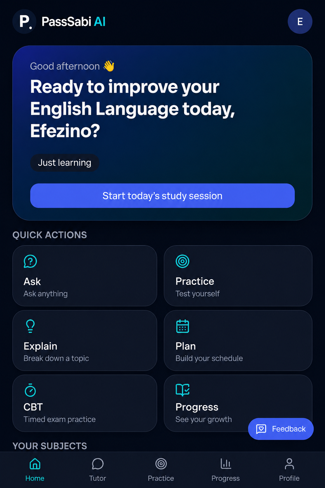
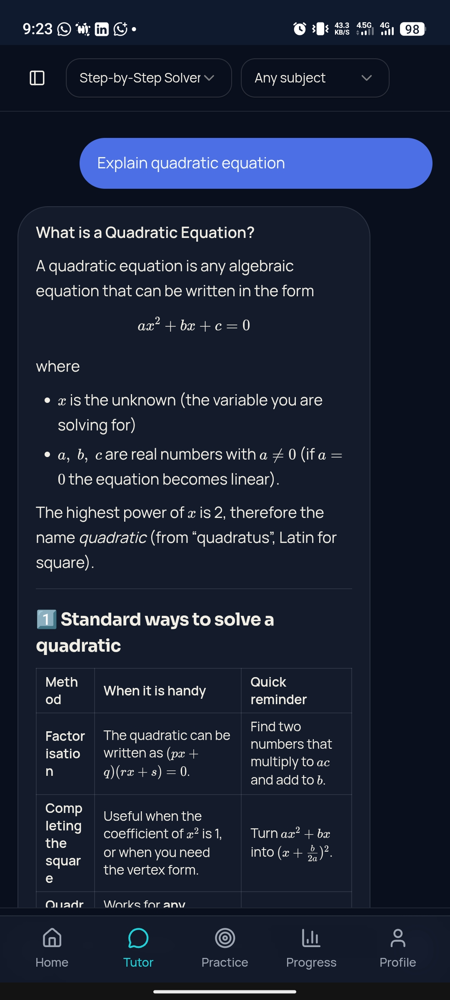

Start with the problem
I wanted an AI teacher for students, not another generic chatbot — something built around how Nigerian students learn and prepare for exams.
Featured build
A student-focused AI learning platform I founded to explore how AI can make learning more interactive and accessible.
FOUNDED + BUILT BY EFEZINO GREAT UZEZI
Building PassSabi pushed me beyond basic coding into authentication, databases, APIs, AI integration, responsive interfaces, deployment and product thinking.
It became a practical laboratory for understanding what happens when an idea has to become a working product.


Case study
PassSabi didn't arrive as a finished product. It grew in stages, with each version forcing another technical problem to be understood.
I wanted an AI teacher for students, not another generic chatbot — something built around how Nigerian students learn and prepare for exams.
I built the frontend across multiple pages — login, signup, password reset, profile and settings — with separate guest and signed-in experiences.
I shaped the chat logic so PassSabi behaves more like a tutor and added controls for chat history, pinning, renaming, deleting and stopping generation.
Chats and user data initially lived in the browser. I moved the app toward Supabase-backed accounts, storage and synchronization.
I implemented signup, login, logout, password reset, email verification and session handling while working toward guest-to-account migration.
Production problems became part of the work: tracing configuration, authentication, APIs and deployment issues instead of walking away from them.
I developed the PassSabi identity and added PWA support so the experience could feel more like an app than a single webpage.
I connected GitHub to Vercel and added the website foundations needed for a publicly deployed product.
What's next
Authentication and cloud-backed data for accounts, chats and progress.
Image and PDF homework, voice interactions and subject-focused tutoring.
Practice experiences for WAEC, NECO and JAMB.
Teacher accounts, student dashboards and progress tracking.